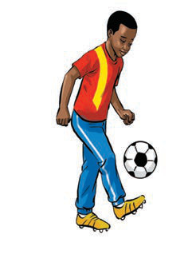
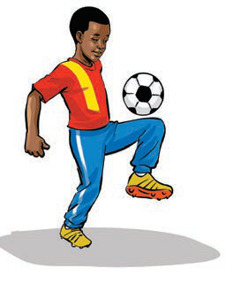
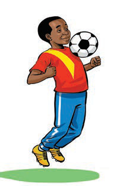
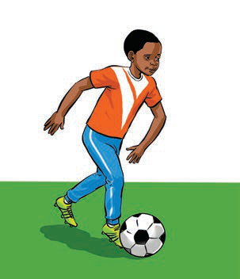

Kielelezo namba 4: Kupokea mpira kwa mguu, paja na kifua
Kazi ya kufanya namba 3
(a)Fanya mazoezi ya kuupokea mpira kwa kutumia mguu, paja na kifua.
(b)Shiriki katika mechi ya mpira wa miguu, cheza ukizingatia kupokea mpira kwa kutumia miguu, paja na kifua.
(c)Kukokota mpira
Kukokota mpira ni kuutembeza mpira kwa miguu, bila kuupoteza.Inahitaji udhibiti mzuri wa mpira, kasi, na muelekeo.Mchezaji anapaswa kuwa na umakini mkubwa ili kudhibiti mpira na kumvuka mpinzani bila kuleta athari ya kupoteza mpira.

Kielelezo namba 5: Kukokota mpira

Kazi ya kufanya namba 4
(a)
Fanya mazoezi ya kukokota mpira kwa umbali wa mita 20 ukianza taratibu kisha haraka.
(b)
Fanya mazoezi ya kukokota mpira kupitia mzunguko wa koni zilizopangwa ardhini.